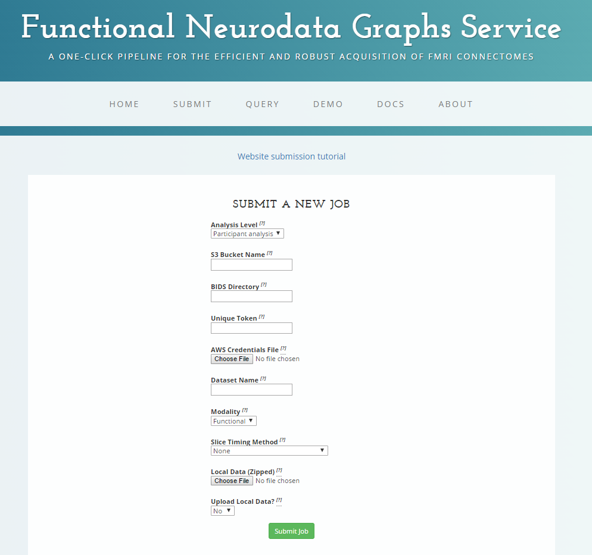

FNGS
A One-Click Pipeline for the Automated Acquisition of Functional MRI Connectomes
Created by Eric Bridgeford, Tanay Agarwal, Eric Walker / Contact: @ebridge2
Follow the slides: ericwb.me/lectures/fngs_final.html
4D Functional Imaging provides dynamic brain activity insights
- Image the BOLD value in each volume-pixel (voxel)
- $2\times 2\times 2\; mm^3$ squares we measure the BOLD contrast in
- Take a 3D volume of a brain per timepoint
- $4D$ image: $3$ spatial $+$ $1$ temporal (time)

T1w Imaging provides a look at finer anatomical features
- high resolution, 3D anatomical image taken with each subject
- Same true brain shape, different resolution
- Allows a look at anatomical features themselves

Quantifying an effective pipeline is difficult
- Discriminability quantifies variations of repeated measurements of a property given several classes
- High Discirminability: repeated connectomes of same label look most similar
- Low Discriminability: all connectomes look the same regardless of label
Preprocessing


Preprocessing Improves Discriminability

- p-value of difference: $p = .01$
- Preprocessing Notebook
Registration

Stepwise-Alignment offers fail-safe registration


- If a brain fails on an aggressive strategy like FNIRT, fall back on a gentle strategy like FLIRT
- Registration Notebook
Nuisance Correction

Nuisance Correction Improves task-Block Correlation Discriminability

- p-value of a difference: $p = .01$
- Nuisance Notebook
Connectome Estimation

FNGS offers simplified scalable deployment compared to CPAC
| Feature | FNGS | CPAC |
|---|---|---|
| Configuration Files | None | Required |
| Pipeline Robustness | Investigated | Highly Variable |
| Simple Output/QA Scheme | Yes | No |
| Cloud Deployment | EC2/Batch | EC2 |
| Command Line Callable | Yes | No |
FNGS performs comparably to reference pipelines

Docker Containers simplify dependency constraints
- software container with all dependencies associated with our pipeline
- user does not have to install anything locally (except for the docker controller)
- All drivers and controllers, for cloud or local usage, can be called from here with one click
FNGS Offers multiple options for deployment
- Local Deployment
- Cloud Deployment
- Website Deployment
- Assumes all data formatted in BIDs spec
FNGS Pipeline

Harmonized Analysis reveals quantitative variations in timeseries
- $n=794$ scans collected at $6$ different sites
- Similar scanners and parameter selection
- Analyze in parallel: approximately $\$50$, and about $7$ hours
- Goal: Are the connectomes differentiable between scan site?
Harmonized Analysis reveals quantitative variations in timeseries


- Theoretical random discriminability score: $0.248$
- p-value of difference: $p = 0.001$
- Scanning site plays a heavy role in quantitative properties
Signal Subgraphing identifies the maximally variant subgraphs in task fMRI
- Given: 2 Classes of Covariance Matrices and Mean Vectors
- Identify 100 most variant edges, and define these edges as subgraph
- Sample $t$ timepoints and form correlation matrix per observation
- Estimate most-variant edges between the 2 classes using Signal Subgraphing Algorithm
- Measure Misclassification rate $\hat{L}$
Signal Subgraphing identifies the maximally variant subgraphs in task fMRI

Future Goals
- Improve Nuisance Correction Further
- Quantify "Bad Nuisance Correction"
- Implement LDDMM (Large Deformation Diffeomorphic Metric Mapping) for Registration
- Explore Multigraphs between functional and diffusion MR connectomes
Important Links
Questions?
Created by Eric Bridgeford, Tanay Agarwal, Eric Walker / Contact: @ebridge2 Special thanks to Jovo, our TA Greg Kiar, and the Neurodata Team!